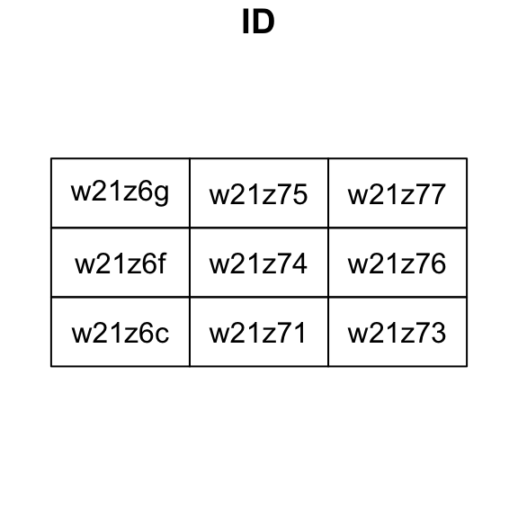
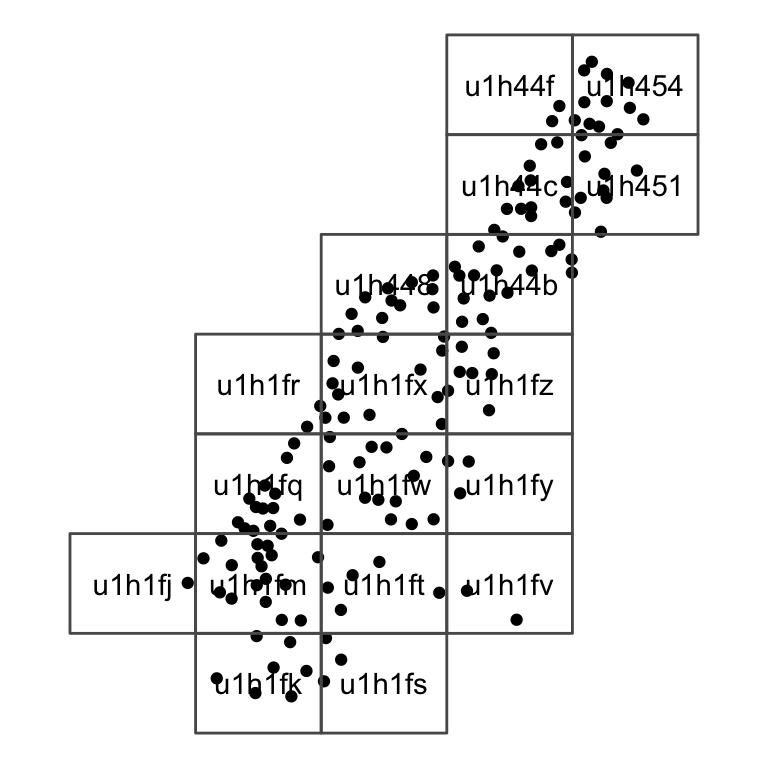

Developed by Gustavo Niemeyer, the geohash is system of nestable, compact global coordinates based on Z-order curves. The system consists of carving the earth into equally-sized rectangles (when projected into latitude/longitude space) and nesting this process recursively. Geohashes are a grid-like hierarchical spatial indexing system. The precision of a geohash is dictated by the length of the character string that encodes it.
The geohash system is useful for indexing or aggregating point data with latitude and longitude coordinates. Each geohash of a given length uniquely identifies a section of the globe.
## Geohash.Length KM.error
## 1 1 2.5e+03
## 2 2 6.3e+02
## 3 3 7.8e+01
## 4 4 2.0e+01
## 5 5 2.4e+00
## 6 6 6.1e-01
## 7 7 7.6e-02
## 8 8 1.9e-02Encoding is the process of turning latitude/longitude coordinates into geohash strings. For example, Parque Nacional Tayrona in Colombia is located at roughly 11.3113917 degrees of latitude, -74.0779006 degrees of longitude. This can be expressed more compactly as:
## [1] "d65267"These 6 characters identify this point on the globe to within 1.2 kilometers (east-west) and .6 kilometers (north-south).
The park is quite large, and this is too precise to cover the park; we can “zoom out” by reducing the precision (which is the number of characters in the output, 6 by default):
gh_encode(11.3113917, -74.0779006, precision = 5L)
## [1] "d6526"We can use this as a simple, regular level of spatial aggregation for spatial points data, e.g., counting presence of public art throughout the city of Chicago, as captured in this dataset provided by the City:
coords = data.frame( x=rnorm(20), y=rnorm(20) ) gh <- gh_encode(coords$x,coords$y) gh
## [1] "7zzu0p" "7zzjux" "7zwtzp" "7zzmyj" "ebr1kq" "ebpgsp" "ebr93k" "kpbwst"
## [9] "7zz7xf" "ebp8pf" "s005tm" "s001bj" "7zz4pq" "kpbjcc" "s021jd" "s00bmh"
## [17] "ebp6ug" "7zzk95" "kpbpf6" "ebpdf1"The reverse of encoding geohashes is of course decoding them – taking a given geohash string and converting it into global coordinates. For example, the Ethiopian coffee growing region of Yirgacheffe is roughly at sc54v:
gh_decode('sc54v')
## $latitude
## [1] 6.130371
##
## $longitude
## [1] 38.21045It can also be helpful to know just how precisely we’ve identified these coordinates; the include_delta argument gives the cell half-widths in both directions in addition to the cell centroid:
gh_decode('sc54v', include_delta = TRUE)
## $latitude
## [1] 6.130371
##
## $longitude
## [1] 38.21045
##
## $delta_latitude
## [1] 0.02197266
##
## $delta_longitude
## [1] 0.02197266For more detail on precision, see the table earlier on this vignette which shows the approximate level potential delta at different precision levels.
In terms of latitude and longitude, all geohashes with the same precision have the same dimensions (though the physical size of the “rectangle” changes depending on the latitude); as such it’s easy to figure out thecell half-widths from the precision alone using gh_delta:
gh_delta(5L)
## [1] 0.02197266 0.02197266You can also pass entire vectors into gh_decode to decode multiple geohashes at once.
gh_decode(gh)
## $latitude
## [1] -0.66192627 -0.35430908 -1.76055908 -0.36529541 1.66168213 0.65643311
## [7] 1.65069580 -0.23345947 -0.77728271 0.01373291 0.64544678 0.33782959
## [13] -1.01898193 -0.38726807 1.59576416 0.06866455 0.50262451 -0.59600830
## [19] -0.03021240 0.49163818
##
## $longitude
## [1] -0.346069336 -1.203002930 -1.796264648 -0.785522461 -1.213989258
## [6] -0.170288086 -0.642700195 0.906372070 -0.708618164 -0.357055664
## [11] 0.236206055 0.005493164 -1.082153320 0.082397461 0.247192383
## [16] 1.279907227 -0.840454102 -1.005249023 0.104370117 -0.609741211One unfortunate consequence of the geohash system is that, while geohashes that are lexicographically similar (e.g. wxyz01 and wxyz12) are certainly close to one another, the converse is not true – for example, 7gxyru and k58n2h are neighbors! Put another way, small movements on the globe occasionally have visually huge jumps in the geohash-encoded output.
The gh_neighbors function is designed to address this. Calling gh_neighbours will return all of the geohashes adjacent to a given geohash (or vector of geohashes) at the same level of precision.
For example, the Merlion statue in Singapore is roughly at w21z74nz, but this level of precision zooms in a bit too far. The geohash neighborhood thereof can be found with:
gh_neighbors('w21z74nz')
## $self
## [1] "w21z74nz"
##
## $southwest
## [1] "w21z74nw"
##
## $south
## [1] "w21z74ny"
##
## $southeast
## [1] "w21z74pn"
##
## $west
## [1] "w21z74nx"
##
## $east
## [1] "w21z74pp"
##
## $northwest
## [1] "w21z74q8"
##
## $north
## [1] "w21z74qb"
##
## $northeast
## [1] "w21z74r0"There are several geohashTools helper functions for converting geohashes into sp and sf class objects.
The gh_to_sp, gh_to_spdf and gh_to_sf functions convert geohash or vector of geohashes into spatial objects of sp and sf class respectively. Consider the previous example with the Singapore Merlion and some random data.
library(sf)
## Linking to GEOS 3.7.2, GDAL 2.4.2, PROJ 5.2.0merlion_ghs <- gh_neighbors("w21z74") merlion_nbhd <- gh_to_sf(merlion_ghs) # Example plot of geohashes neighbouring w21z74 plot(merlion_nbhd, col = NA, reset = FALSE, key.pos = NULL) text(st_coordinates(st_centroid(merlion_nbhd)), labels = row.names(merlion_nbhd))
## Warning in st_centroid.sf(merlion_nbhd): st_centroid assumes attributes are
## constant over geometries of x## Warning in st_centroid.sfc(st_geometry(x), of_largest_polygon =
## of_largest_polygon): st_centroid does not give correct centroids for longitude/
## latitude data
Sometimes we have a set of spatial datapoints that we want to aggregate or index using geohashes. The gh_covering function produces a grid of geohashes that overlap with the spatial points. For this function to work, the spatial object has to be in the WGS84 (EPSG 4326) coordinate reference system that the geohashes use.
Let’s use the included meuse dataset in the sp package which shows point coordinates for metal deposits. The first element in this object shows values for cadmium deposits.
if (!requireNamespace("ggplot2")) { install.packages("ggplot2") }
## Loading required namespace: ggplot2library(ggplot2) data(meuse, package = "sp") meuse_sf = st_as_sf(meuse, coords = c("x", "y"), crs = 28992, agr = "constant") meuse_sf <- st_transform(meuse_sf, crs = st_crs(4326)) ggplot() + geom_sf(data = meuse_sf, aes(colour = cadmium)) + theme_void()
By default, gh_covering creates a grid that covers the extent of the bounding box for the spatial object.
meuse_gh <- gh_covering(meuse_sf)
## Warning in sp::proj4string(SP): CRS object has comment, which is lost in outputmeuse_gh## Simple feature collection with 40 features and 1 field
## geometry type: POLYGON
## dimension: XY
## bbox: xmin: 5.712891 ymin: 50.95459 xmax: 5.767822 ymax: 50.99854
## CRS: +proj=longlat +datum=WGS84 +no_defs +ellps=WGS84 +towgs84=0,0,0
## First 10 features:
## ID geometry
## u1h1fh 1 POLYGON ((5.712891 50.95459...
## u1h1fj 2 POLYGON ((5.712891 50.96008...
## u1h1fn 3 POLYGON ((5.712891 50.96558...
## u1h1fp 4 POLYGON ((5.712891 50.97107...
## u1h440 5 POLYGON ((5.712891 50.97656...
## u1h441 6 POLYGON ((5.712891 50.98206...
## u1h444 7 POLYGON ((5.712891 50.98755...
## u1h445 8 POLYGON ((5.712891 50.99304...
## u1h1fk 9 POLYGON ((5.723877 50.95459...
## u1h1fm 10 POLYGON ((5.723877 50.96008...We can visualize what this looks like with geohashes overlayed on top.
ggplot() + geom_sf(data = meuse_sf) + geom_sf(data = meuse_gh, fill = NA) + geom_sf_text(data = meuse_gh, aes(label = rownames(meuse_gh))) + theme_void()
## Warning in st_point_on_surface.sfc(sf::st_zm(x)): st_point_on_surface may not
## give correct results for longitude/latitude dataAlternatively, using gh_covering with the parameter minimal = TRUE will only create geohashes for intersecting objects.
meuse_gh <- gh_covering(meuse_sf, minimal = TRUE)
## Warning in sp::proj4string(SP): CRS object has comment, which is lost in outputggplot() + geom_sf(data = meuse_sf) + geom_sf(data = meuse_gh, fill = NA) + geom_sf_text(data = meuse_gh, aes(label = rownames(meuse_gh))) + theme_void()
## Warning in st_point_on_surface.sfc(sf::st_zm(x)): st_point_on_surface may not
## give correct results for longitude/latitude data